我们使用磁盘时，有时希望它更快。I/O 操作很慢，因此可能成为整个系统的瓶颈。我们使用磁盘时，有时希望它更大。越来越多的数据正在上线，因此磁盘变得越来越满。我们使用磁盘时，有时希望它更可靠。如果磁盘出现故障，而数据没有备份，那么所有有价值的数据都没了。
关键问题：如何得到大型、快速、可靠的磁盘
我们如何构建一个大型、快速和可靠的存储系统？关键技术是什么？不同方法之间的折中是什么？
本章将介绍廉价冗余磁盘阵列（Redundant Array of Inexpensive Disks），更多时候称为RAID [P+88]，这种技术使用多个磁盘一起构建更快、更大、更可靠的磁盘系统。这个词在20世纪80年代后期由U.C.伯克利的一组研究人员引入（由David Patterson教授和Randy Katz教授以及后来的学生Garth Gibson 领导）。大约在这个时候，许多不同的研究人员同时提出了使用多个磁盘来构建更好的存储系统的基本思想[BJ88，K86，K88，PB86，SG86]。
从外部看，RAID 看起来像一个磁盘：一组可以读取或写入的块。在内部，RAID 是一个复杂的庞然大物，由多个磁盘、内存（包括易失性和非易失性）以及一个或多个处理器来管理系统。硬件RAID 非常像一个计算机系统，专门用于管理一组磁盘。
与单个磁盘相比，RAID 具有许多优点。一个好处就是性能。并行使用多个磁盘可以大大加快I/O 时间。另一个好处是容量。大型数据集需要大型磁盘。最后，RAID 可以提高可靠性。在多个磁盘上传输数据（无RAID 技术）会使数据容易受到单个磁盘丢失的影响。通过某种形式的冗余（redundancy），RAID 可以容许损失一个磁盘并保持运行，就像没有错误一样。
提示：透明支持部署
在考虑如何向系统添加新功能时，应该始终考虑是否可以透明地（transparently）添加这样的功能，而不需要对系统其余部分进行更改。要求彻底重写现有软件（或激进的硬件更改）会减少创意产生影响的机会。RAID 就是一个很好的例子，它的透明肯定有助于它的成功。管理员可以安装基于SCSI 的RAID存储阵列而不是SCSI 磁盘，系统的其他部分（主机，操作系统等）不必更改一位就可以开始使用它。通过解决这个部署（deployment）问题，RAID 从第一天开始就取得了更大的成功。
令人惊讶的是，RAID 为使用它们的系统透明地（transparently）提供了这些优势，即RAID 对于主机系统看起来就像一个大磁盘。当然，透明的好处在于它可以简单地用RAID替换磁盘，而不需要更换一行软件。操作系统和客户端应用程序无须修改，就可以继续运行。通过这种方式，透明极大地提高了RAID 的可部署性（deployability），使用户和管理员可以使用RAID，而不必担心软件兼容性问题。
我们现在来讨论一些RAID 的重要方面。从接口、故障模型开始，然后讨论如何在 3个重要的方面评估RAID 设计：容量、可靠性和性能。然后我们讨论一些对RAID 设计和实现很重要的其他问题。
38.1 接口和RAID 内部¶
对于上面的文件系统，RAID 看起来像是一个很大的、（我们希望是）快速的、并且（希望是）可靠的磁盘。就像使用单个磁盘一样，它将自己展现为线性的块数组，每个块都可以由文件系统（或其他客户端）读取或写入。
当文件系统向RAID 发出逻辑I/O 请求时，RAID 内部必须计算要访问的磁盘（或多个磁盘）以完成请求，然后发出一个或多个物理I/O 来执行此操作。这些物理I/O 的确切性质取决于RAID 级别，我们将在下面详细讨论。但是，举一个简单的例子，考虑一个RAID，它保留每个块的两个副本（每个都在一个单独的磁盘上）。当写入这种镜像（mirrored）RAID系统时，RAID 必须为它发出的每一个逻辑I/O 执行两个物理I/O。
RAID 系统通常构建为单独的硬件盒，并通过标准连接（例如，SCSI 或SATA）接入主机。然而，在内部，RAID 相当复杂。它包括一个微控制器，运行固件以指导RAID 的操作。它还包括DRAM 这样的易失性存储器，在读取和写入时缓冲数据块。在某些情况下，还包括非易失性存储器，安全地缓冲写入。它甚至可能包含专用的逻辑电路，来执行奇偶校验计算（在某些RAID 级别中非常有用，下面会提到）。在很高的层面上，RAID 是一个非常专业的计算机系统：它有一个处理器，内存和磁盘。然而，它不是运行应用程序，而是运行专门用于操作RAID 的软件。
38.2 故障模型¶
要理解RAID 并比较不同的方法，我们必须考虑故障模型。RAID 旨在检测并从某些类型的磁盘故障中恢复。因此，准确地知道哪些故障对于实现工作设计至关重要。
我们假设的第一个故障模型非常简单，并且被称为故障—停止（fail-stop）故障模型[S84]。在这种模式下，磁盘可以处于两种状态之一：工作状态或故障状态。使用工作状态的磁盘时，所有块都可以读取或写入。相反，当磁盘出现故障时，我们认为它永久丢失。
故障—停止模型的一个关键方面是它关于故障检测的假定。具体来说，当磁盘发生故障时，我们认为这很容易检测到。例如，在RAID 阵列中，我们假设RAID 控制器硬件（或软件）可以立即观察磁盘何时发生故障。
因此，我们暂时不必担心更复杂的“无声”故障，如磁盘损坏。我们也不必担心在其他工作磁盘上无法访问单个块（有时称为潜在扇区错误）。稍后我们会考虑这些更复杂的（遗憾的是，更现实的）磁盘错误。
38.3 如何评估RAID¶
我们很快会看到，构建RAID 有多种不同的方法。每种方法都有不同的特点，这值得评估，以便了解它们的优缺点。
具体来说，我们将从3 个方面评估每种RAID 设计。第一个方面是容量（capacity）。在给定一组N 个磁盘的情况下，RAID 的客户端可用的容量有多少？没有冗余，答案显然是N。不同的是，如果有一个系统保存每个块的两个副本，我们将获得N/2 的有用容量。不同的方案（例如，基于校验的方案）通常介于两者之间。
第二个方面是可靠性（reliability）。给定设计允许有多少磁盘故障？根据我们的故障模型，我们只假设整个磁盘可能会故障。在后面的章节（例如，关于数据完整性的第44 章）中，我们将考虑如何处理更复杂的故障模式。
最后，第三个方面是性能（performance）。性能有点难以评估，因为它在很大程度上取决于磁盘阵列提供的工作负载。因此，在评估性能之前，我们将首先提出一组应该考虑的典型工作负载。
我们现在考虑3 个重要的RAID 设计：RAID 0 级（条带化），RAID 1 级（镜像）和RAID 4/5 级（基于奇偶校验的冗余）。这些设计中的每一个都被命名为一“级”，源于伯克利的Patterson、Gibson 和Katz 的开创性工作[P+88]。
38.4 RAID 0 级：条带化¶
第一个RAID 级别实际上不是RAID 级别，因为没有冗余。但是，RAID 0 级（即条带化，striping）因其更为人所知，可作为性能和容量的优秀上限，所以值得了解。
最简单的条带形式将按表38.1 所示的方式在系统的磁盘上将块条带化（stripe），假设此处为4 个磁盘阵列。
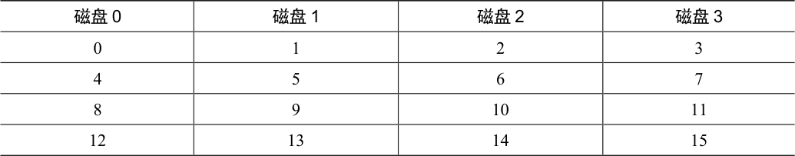
表38.1 RAID-0：简单条带化
表格文字
| 磁盘0 | 磁盘1 | 磁盘2 | 磁盘3 |
|---|---|---|---|
| 0 | 1 | 2 | 3 |
| 4 | 5 | 6 | 7 |
| 8 | 9 | 10 | 11 |
| 12 | 13 | 14 | 15 |
通过表38.1，你了解了基本思想：以轮转方式将磁盘阵列的块分布在磁盘上。这种方法的目的是在对数组的连续块进行请求时，从阵列中获取最大的并行性（例如，在一个大的顺序读取中）。我们将同一行中的块称为条带，因此，上面的块0、1、2 和3 在相同的条带中。
在这个例子中，我们做了一个简化的假设，在每个磁盘上只有1 个块（每个大小为4KB）放在下一个磁盘上。但是，这种安排不是必然的。例如，我们可以像表38.2 那样在磁盘上安排块。
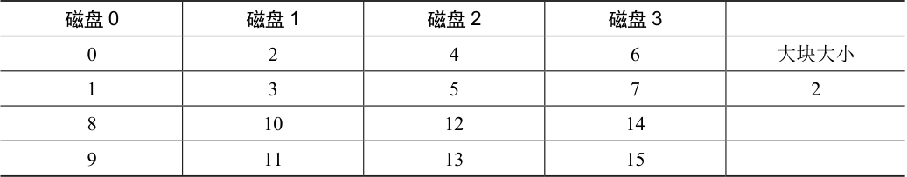
表38.2 使用较大的大块大小进行条带化
表格文字
| 磁盘0 | 磁盘1 | 磁盘2 | 磁盘3 | |
|---|---|---|---|---|
| 0 | 2 | 4 | 6 | 大块大小 |
| 1 | 3 | 5 | 7 | 2 |
| 8 | 10 | 12 | 14 | |
| 9 | 11 | 13 | 15 |
在这个例子中，我们在每个磁盘上放置两个4KB 块，然后移动到下一个磁盘。因此，此RAID 阵列的大块大小（chunk size）为8KB，因此条带由4 个大块（或32KB）数据组成。
补充：RAID 映射问题
在研究RAID 的容量、可靠性和性能特征之前，我们首先提出一个问题，我们称之为映射问题（the mapping problem）。这个问题出现在所有RAID 阵列中。简单地说，给定一个逻辑块来读或写，RAID 如何确切地知道要访问哪个物理磁盘和偏移量？
对于这些简单的RAID 级别，我们不需要太多复杂计算，就能正确地将逻辑块映射到其物理位置。以上面的第一个条带为例（大块大小= 1 块= 4KB）。在这种情况下，给定逻辑块地址A，RAID 可以使用两个简单的公式轻松计算要访问的磁盘和偏移量：
RAID 映射：磁盘与偏移量
请注意，这些都是整数运算（例如，4/3 = 1 而不是1.33333…）。我们来看看这些公式如何用于一个简单的例子。假设在上面的第一个RAID 中，对块15 的请求到达。鉴于有4 个磁盘，这意味着我们感兴趣的磁盘是（14 % 4 = 2）：磁盘2。确切的块计算为（14 / 4 = 3）：块3。因此，应在第三个磁盘（磁盘2，从0 开始）的第四个块（块3，从0 开始）处找到块14，该块恰好位于该位置。
你可以考虑如何修改这些公式来支持不同的块大小。尝试一下！这不太难。
大块大小¶
一方面，大块大小主要影响阵列的性能。例如，大小较小的大块意味着许多文件将跨多个磁盘进行条带化，从而增加了对单个文件的读取和写入的并行性。但是，跨多个磁盘访问块的定位时间会增加，因为整个请求的定位时间由所有驱动器上请求的最大定位时间决定。
另一方面，较大的大块大小减少了这种文件内的并行性，因此依靠多个并发请求来实现高吞吐量。但是，较大的大块大小减少了定位时间。例如，如果一个文件放在一个块中并放置在单个磁盘上，则访问它时发生的定位时间将只是单个磁盘的定位时间。
因此，确定“最佳”的大块大小是很难做到的，因为它需要大量关于提供给磁盘系统的工作负载的知识[CL95]。对于本讨论的其余部分，我们将假定该数组使用单个块（4KB）的大块大小。大多数阵列使用较大的大块大小（例如，64KB），但对于我们在下面讨论的问题，确切的块大小无关紧要。因此，简单起见，我们用一个单独的块。
回到RAID-0 分析¶
现在让我们评估条带化的容量、可靠性和性能。从容量的角度来看，它是顶级的：给定N 个磁盘，条件化提供N 个磁盘的有用容量。从可靠性的角度来看，条带化也是顶级的，但是最糟糕：任何磁盘故障都会导致数据丢失。最后，性能非常好：通常并行使用所有磁盘来为用户I/O 请求提供服务。
评估RAID 性能¶
在分析RAID 性能时，可以考虑两种不同的性能指标。首先是单请求延迟。了解单个I/O 请求对RAID 的满意度非常有用，因为它可以揭示单个逻辑I/O 操作期间可以存在多少并行性。第二个是RAID 的稳态吞吐量，即许多并发请求的总带宽。由于RAID 常用于高性能环境，因此稳态带宽至关重要，因此将成为我们分析的主要重点。
为了更详细地理解吞吐量，我们需要提出一些感兴趣的工作负载。对于本次讨论，我们将假设有两种类型的工作负载：顺序（sequential）和随机（random）。对于顺序的工作负载，我们假设对阵列的请求大部分是连续的。例如，一个请求（或一系列请求）访问1MB数据，始于块（B），终于（B+1MB），这被认为是连续的。顺序工作负载在很多环境中都很常见（想想在一个大文件中搜索关键字），因此被认为是重要的。
对于随机工作负载，我们假设每个请求都很小，并且每个请求都是到磁盘上不同的随机位置。例如，随机请求流可能首先在逻辑地址10 处访问4KB，然后在逻辑地址550000处访问，然后在20100 处访问，等等。一些重要的工作负载（例如数据库管理系统（DBMS）上的事务工作负载）表现出这种类型的访问模式，因此它被认为是一种重要的工作负载。
当然，真正的工作负载不是那么简单，并且往往混合了顺序和类似随机的部分，行为介于两者之间。简单起见，我们只考虑这两种可能性。
你知道，顺序和随机工作负载会导致磁盘的性能特征差异很大。对于顺序访问，磁盘以最高效的模式运行，花费很少时间寻道并等待旋转，大部分时间都在传输数据。对于随机访问，情况恰恰相反：大部分时间花在寻道和等待旋转上，花在传输数据上的时间相对较少。为了在分析中捕捉到这种差异，我们将假设磁盘可以在连续工作负载下以S MB/s 传输数据，并且在随机工作负载下以R MB/s 传输数据。一般来说，S 比R 大得多。
为了确保理解这种差异，我们来做一个简单的练习。具体来说，给定以下磁盘特征，计算S 和R。假设平均大小为10MB 的连续传输，平均为10KB 的随机传输。另外，假设以下磁盘特征：
平均寻道时间7ms
平均旋转延迟3ms
磁盘传输速率50MB/s
要计算S，我们需要首先计算在典型的10MB 传输中花费的时间。首先，我们花7ms寻找，然后3ms 旋转。最后，传输开始。10MB @ 50MB/s 导致1/5s，即200ms 的传输时间。因此，对于每个10MB 的请求，花费了210ms 完成请求。要计算S，只需要除一下：
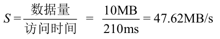
顺序吞吐量 S 的计算
如你所见，由于大量时间用于传输数据，S 非常接近磁盘的峰值带宽（寻道和旋转成本已经摊销）。
我们可以类似地计算R。寻道和旋转是一样的。然后我们计算传输所花费的时间，即10KB @ 50MB/s，即0.195ms。
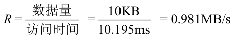
随机吞吐量 R 的计算
如你所见，R 小于1MB/s，S/R 几乎为50 倍。
再次回到RAID-0 分析¶
现在我们来评估条带化的性能。正如我们上面所说的，它通常很好。例如，从延迟角度来看，单块请求的延迟应该与单个磁盘的延迟几乎相同。毕竟，RAID-0 将简单地将该请求重定向到其磁盘之一。
从稳态吞吐量的角度来看，我们期望获得系统的全部带宽。因此，吞吐量等于N（磁盘数量）乘以S（单个磁盘的顺序带宽）。对于大量的随机I/O，我们可以再次使用所有的磁盘，从而获得N·R MB/s。我们在后面会看到，这些值都是最简单的计算值，并且将作为与其他RAID 级别比较的上限。
38.5 RAID 1 级：镜像¶
第一个超越条带化的RAID 级别称为RAID 1 级，即镜像。对于镜像系统，我们只需生成系统中每个块的多个副本。当然，每个副本应该放在一个单独的磁盘上。通过这样做，我们可以容许磁盘故障。
在一个典型的镜像系统中，我们将假设对于每个逻辑块，RAID 保留两个物理副本。表38.3 所示的是一个例子。
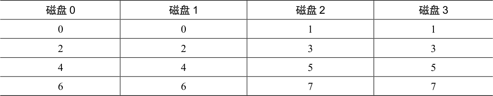
表38.3 简单RAID-1：镜像
表格文字
| 磁盘0 | 磁盘1 | 磁盘2 | 磁盘3 |
|---|---|---|---|
| 0 | 0 | 1 | 1 |
| 2 | 2 | 3 | 3 |
| 4 | 4 | 5 | 5 |
| 6 | 6 | 7 | 7 |
在这个例子中，磁盘0 和磁盘1 具有相同的内容，而磁盘2 和磁盘3 也具有相同的内容。数据在这些镜像对之间条带化。实际上，你可能已经注意到有多种不同的方法可以在磁盘上放置块副本。上面的安排是常见的安排，有时称为RAID-10（或RAID 1+0），因为它使用镜像对（RAID-1），然后在其上使用条带化（RAID-0）。另一种常见安排是RAID-01（或RAID 0+1），它包含两个大型条带化（RAID-0）阵列，然后是镜像（RAID-1）。目前，我们的讨论只是假设上面布局的镜像。
从镜像阵列读取块时，RAID 有一个选择：它可以读取任一副本。例如，如果对RAID发出对逻辑块5 的读取，则可以自由地从磁盘2 或磁盘3 读取它。但是，在写入块时，不存在这样的选择：RAID 必须更新两个副本的数据，以保持可靠性。但请注意，这些写入可以并行进行。例如，对逻辑块5 的写入可以同时在磁盘2 和3 上进行。
RAID-1 分析¶
让我们评估一下RAID-1。从容量的角度来看，RAID-1 价格昂贵。在镜像级别=2 的情况下，我们只能获得峰值有用容量的一半。因此，对于N 个磁盘，镜像的有用容量为N/2。
从可靠性的角度来看，RAID-1 表现良好。它可以容许任何一个磁盘的故障。你也许会注意到RAID-1 实际上可以做得比这更好，只需要一点运气。想象一下，在表38.3 中，磁盘0 和磁盘2 都故障了。在这种情况下，没有数据丢失！更一般地说，镜像系统（镜像级别为2）肯定可以容许一个磁盘故障，最多可容许N/2 个磁盘故障，这取决于哪些磁盘故障。在实践中，我们通常不喜欢把这样的事情交给运气。因此，大多数人认为镜像对于处理单个故障是很好的。
最后，我们分析性能。从单个读取请求的延迟角度来看，我们可以看到它与单个磁盘上的延迟相同。所有RAID-1 都会将读取导向一个副本。写入有点不同：在完成写入之前，需要完成两次物理写入。这两个写入并行发生，因此时间大致等于单次写入的时间。然而，因为逻辑写入必须等待两个物理写入完成，所以它遭遇到两个请求中最差的寻道和旋转延迟，因此（平均而言）比写入单个磁盘略高。
补充：RAID 一致更新问题
在分析RAID-1 之前，让我们先讨论所有多磁盘RAID 系统都会出现的问题，称为一致更新问题（consistent-update problem）[DAA05]。对于任何在单个逻辑操作期间必须更新多个磁盘的RAID，会出现这个问题。在这里，假设考虑镜像磁盘阵列。
想象一下写入发送到RAID，然后RAID 决定它必须写入两个磁盘，即磁盘0 和磁盘1。然后，RAID向磁盘0 写入数据，但在RAID 发出请求到磁盘1 之前，发生掉电（或系统崩溃）。在这个不幸的情况下，让我们假设对磁盘0 的请求已完成（但对磁盘1 的请求显然没有完成，因为它从未发出）。
这种不合时宜的掉电，导致现在数据块的两个副本不一致（inconsistent）。磁盘0 上的副本是新版本，而磁盘1 上的副本是旧的。我们希望的是两个磁盘的状态都原子地（atomically）改变，也就是说，两者都应该最终成为新版本或者两者都不是。
解决此问题的一般方法，是使用某种预写日志（write-ahead log），在做之前首先记录RAID 将要执行的操作（即用某个数据更新两个磁盘）。通过采取这种方法，我们可以确保在发生崩溃时，会发生正确的事情。通过运行一个恢复（recovery）过程，将所有未完成的事务重新在RAID 上执行，我们可以确保两个镜像副本（在RAID-1 情况下）同步。
最后一个注意事项：每次写入都在磁盘上记录日志，这个代价昂贵得不行，因此大多数RAID 硬件都包含少量非易失性RAM（例如电池有备份的），用于执行此类记录。因此，既提供了一致的更新，又不需要花费高昂的代价，将日志记录到磁盘。
要分析稳态吞吐量，让我们从顺序工作负载开始。顺序写入磁盘时，每个逻辑写入必定导致两个物理写入。例如，当我们写入逻辑块 0（在表 38.3 中）时，RAID 在内部会将它写入磁盘 0 和磁盘 1。因此，我们可以得出结论，顺序写入镜像阵列期间获得的最大带宽是 (N/2) · S，即峰值带宽的一半。
遗憾的是，我们在顺序读取过程中获得了完全相同的性能。有人可能会认为顺序读取可能会更好，因为它只需要读取一个数据副本，而不是两个副本。但是，让我们用一个例子来说明为什么这没有多大帮助。想象一下，我们需要读取块0、1、2、3、4、5、6 和7。假设我们将0 读到磁盘0，将1 读到磁盘2，将2 读到磁盘1，读取3 到磁盘3。我们继续分别向磁盘0、2、1 和3 发出读取请求4、5、6 和7。有人可能天真地认为，因为我们正在利用所有磁盘，所以得到了阵列的全部带宽。
但是，要看到情况并非如此，请考虑单个磁盘接收的请求（例如磁盘 0）。首先，它收到块 0 的请求。然后，它收到块 4 的请求（跳过块 2）。实际上，每个磁盘都会接收到每个其他块的请求。当它在跳过的块上旋转时，不会为客户提供有用的带宽。因此，每个磁盘只能提供一半的峰值带宽。因此，顺序读取只能获得 (N/2) · S MB/s 的带宽。
随机读取是镜像RAID 的最佳案例。在这种情况下，我们可以在所有磁盘上分配读取数据，从而获得完整的可用带宽。因此，对于随机读取，RAID-1 提供N·R MB/s。
最后，随机写入按照你预期的方式执行：(N/2) · R MB/s。每个逻辑写入必须变成两个物理写入，因此在所有磁盘都将被使用的情况下，客户只会看到可用带宽的一半。尽管对逻辑块 X 的写入变为对两个不同物理磁盘的两个并行写入，但许多小型请求的带宽只能达到我们看到的条带化的一半。我们很快会看到，获得一半的可用带宽实际上相当不错！
38.6 RAID 4 级：通过奇偶校验节省空间¶
我们现在展示一种向磁盘阵列添加冗余的不同方法，称为奇偶校验（parity）。基于奇偶校验的方法试图使用较少的容量，从而克服由镜像系统付出的巨大空间损失。不过，这样做的代价是——性能。
这是5 个磁盘的RAID-4 系统的例子（见表38.4）。对于每一条数据，我们都添加了一个奇偶校验（parity）块，用于存储该条块的冗余信息。例如，奇偶校验块P1 具有从块4、5、6 和7 计算出的冗余信息。
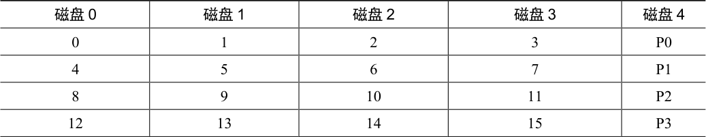
表38.4 具有奇偶校验的RAID-4
表格文字
| 磁盘0 | 磁盘1 | 磁盘2 | 磁盘3 | 磁盘4 |
|---|---|---|---|---|
| 0 | 1 | 2 | 3 | P0 |
| 4 | 5 | 6 | 7 | P1 |
| 8 | 9 | 10 | 11 | P2 |
| 12 | 13 | 14 | 15 | P3 |
为了计算奇偶性，我们需要使用一个数学函数，使我们能够承受条带中任何一个块的损失。事实表明，简单异或（XOR）函数相当不错。对于给定的一组比特，如果比特中有偶数个1，则所有这些比特的XOR 返回0，如果有奇数个1，则返回1 如表38.5 所示。
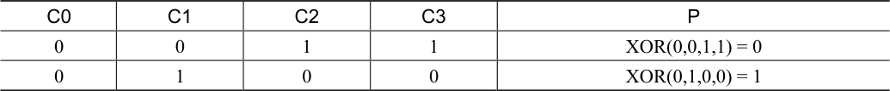
表38.5 使用异或函数
表格文字
| C0 | C1 | C2 | C3 | P |
|---|---|---|---|---|
| 0 | 0 | 1 | 1 | XOR(0,0,1,1) = 0 |
| 0 | 1 | 0 | 0 | XOR(0,1,0,0) = 1 |
在第一行（0、0、1、1）中，有两个1（C2、C3），因此所有这些值的异或是0（P）。同样，在第二行中只有一个1（C1），因此XOR 必须是1（P）。你可以用一种简单的方法记住这一点：任何一行中的1 的数量必须是偶数（而不是奇数）。这是RAID 必须保持的不变性（invariant），以便奇偶校验正确。
从上面的例子中，你也许可以猜出，如何利用奇偶校验信息从故障中恢复。想象一下标为C2 的列丢失了。要找出该列中肯定存在的值，我们只需读取该行中的所有其他值（包括XOR 的奇偶校验位）并重构（reconstruct）正确的答案。具体来说，假设C2 列中第一行的值丢失（它是1）。通过读取该行中的其他值（C0 中的0，C1 中的0，C3 中的1 以及奇偶校验列P 中的0），我们得到值0、0、1 和0。因为我们知道XOR 保持每行有偶数个1，所以就知道丢失的数据肯定是什么——1。这就是重构在基于异或的方案中的工作方式！还要注意如何计算重构值：只要将数据位和奇偶校验位异或，就像开始计算奇偶校验一样。
现在你可能会想：我们正在讨论所有这些位的异或，然而上面我们知道RAID 在每个磁盘上放置了4KB（或更大）的块。如何将XOR 应用于一堆块来计算奇偶校验？事实证明这很容易。只需在数据块的每一位上执行按位XOR。将每个按位XOR 的结果放入奇偶校验块的相应位置中。例如，如果我们有4 位大小的块（是的，这个块仍然比4KB 块小很多，但是你看到了全景），它们可能看起来如表38.6 所示。
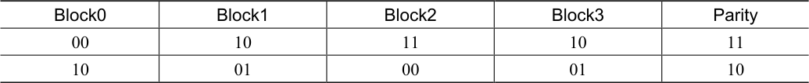
表38.6 将XOR 用于块
表格文字
| Block0 | Block1 | Block2 | Block3 | Parity |
|---|---|---|---|---|
| 00 | 10 | 11 | 10 | 11 |
| 10 | 01 | 00 | 01 | 10 |
可以看出，每个块的每个比特计算奇偶校验，结果放在奇偶校验块中。
RAID-4 分析¶
现在让我们分析一下RAID-4。从容量的角度来看，RAID-4 使用1 个磁盘作为它所保护的每组磁盘的奇偶校验信息。因此，RAID 组的有用容量是（N−1）。
可靠性也很容易理解：RAID-4 容许1 个磁盘故障，不容许更多。如果丢失多个磁盘，则无法重建丢失的数据。
最后，是性能。这一次，让我们从分析稳态吞吐量开始。连续读取性能可以利用除奇偶校验磁盘以外的所有磁盘，因此可提供（N−1）·S MB/s（简单情况）的峰值有效带宽。
要理解顺序写入的性能，我们必须首先了解它们是如何完成的。将大块数据写入磁盘时，RAID-4 可以执行一种简单优化，称为全条带写入（full-stripe write）。例如，设想块0、1、2 和3 作为写请求的一部分发送到RAID（见表38.7）。
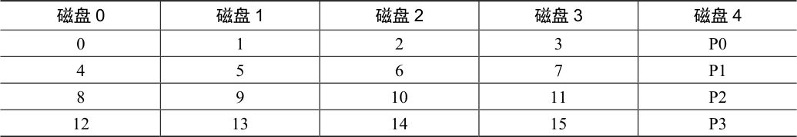
表38.7 RAID-4 中的全条带写入
表格文字
| 磁盘0 | 磁盘1 | 磁盘2 | 磁盘3 | 磁盘4 |
|---|---|---|---|---|
| 0 | 1 | 2 | 3 | P0 |
| 4 | 5 | 6 | 7 | P1 |
| 8 | 9 | 10 | 11 | P2 |
| 12 | 13 | 14 | 15 | P3 |
在这种情况下，RAID 可以简单地计算P0 的新值（通过在块0、1、2 和3 上执行XOR），然后将所有块（包括奇偶块）并行写入上面的5 个磁盘（在图中以灰色突出显示）。因此，全条带写入是RAID-4 写入磁盘的最有效方式。
一旦我们理解了全条带写入，计算RAID-4 上顺序写入的性能就很容易。有效带宽也是（N−1）·S MB/s。即使奇偶校验磁盘在操作过程中一直处于使用状态，客户也无法从中获得性能优势。
现在让我们分析随机读取的性能。从表38.7 中还可以看到，一组1 块的随机读取将分布在系统的数据磁盘上，而不是奇偶校验磁盘上。因此，有效性能是：（N−1）·R MB/s。
随机写入，我们留到了最后，展示了RAID-4 最引人注目的情况。想象一下，我们希望在上面的例子中覆盖写入块1。我们可以继续并覆盖它，但这会给我们带来一个问题：奇偶校验块P0 将不再准确地反映条带的正确奇偶校验值。在这个例子中，P0 也必须更新。我们如何正确并有效地更新它？
存在两种方法。第一种称为加法奇偶校验（additive parity），要求我们做以下工作。为了计算新奇偶校验块的值，并行读取条带中所有其他数据块（在本例中为块0、2 和3），并与新块（1）进行异或。结果是新的校验块。为了完成写操作，你可以将新数据和新奇偶校验写入其各自的磁盘，也是并行写入。
这种技术的问题在于它随磁盘数量而变化，因此在较大的RAID 中，需要大量的读取来计算奇偶校验。因此，导致了减法奇偶校验（subtractive parity）方法。
例如，想象下面这串位（4 个数据位，一个奇偶校验位）：
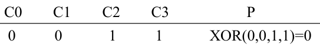
数据位与 XOR 奇偶校验位
想象一下，我们希望用一个新值来覆盖C2 位，称之为C2new。减法方法分三步工作。首先，我们读入C2（C2old = 1）和旧数据（Pold = 0）的旧数据。
然后，比较旧数据和新数据。如果它们相同（例如，C2new = C2old），那么我们知道奇偶校验位也将保持相同（即Pnew = Pold）。但是，如果它们不同，那么我们必须将旧的奇偶校验位翻转到其当前状态的相反位置，也就是说，如果（Pold == 0），Pnew将被设置为0。如果（Pold == 0），Pnew将被设置为1。我们可以用XOR（⊕是XOR 运算符）漂亮地表达完整的复杂情况：
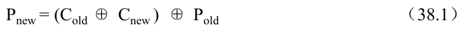
公式 38.1：减法奇偶校验
由于所处理的是块而不是位，因此我们对块中的所有位执行此计算（例如，每个块中的4096 个字节乘以每个字节的8 位）。在大多数情况下，新块与旧块不同，因此新的奇偶块也会不同。
你现在应该能够确定何时使用加法奇偶校验计算，何时使用减法方法。考虑系统中需要多少个磁盘，导致加法方法比减法方法执行更少的I/O。哪里是交叉点？
对于这里的性能分析，假定使用减法方法。因此，对于每次写入，RAID 必须执行4 次物理I/O（两次读取和两次写入）。现在想象有很多提交给RAID 的写入。RAID-4 可以并行执行多少个？为了理解，让我们再看一下RAID-4 的布局（见表38.8）。
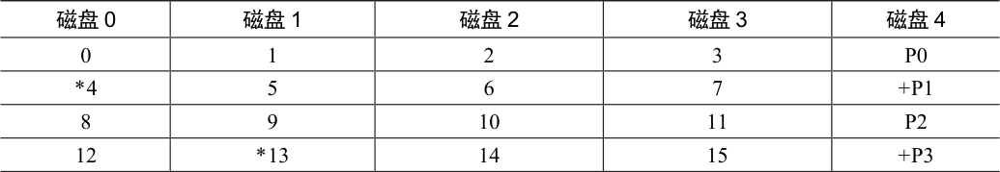
表38.8 示例：写入4、13 和对应奇偶校验块
表格文字
| 磁盘0 | 磁盘1 | 磁盘2 | 磁盘3 | 磁盘4 |
|---|---|---|---|---|
| 0 | 1 | 2 | 3 | P0 |
| *4 | 5 | 6 | 7 | +P1 |
| 8 | 9 | 10 | 11 | P2 |
| 12 | *13 | 14 | 15 | +P3 |
现在想象几乎同时向RAID-4 提交2 个小的请求，写入块4 和块13（在表38.8 中标出）。
这些磁盘的数据位于磁盘0 和1 上，因此对数据的读写操作可以并行进行，这很好。出现的问题是奇偶校验磁盘。这两个请求都必须读取4 和13 的奇偶校验块，即奇偶校验块1 和3（用+标记）。估计你已明白了这个问题：在这种类型的工作负载下，奇偶校验磁盘是瓶颈。因此我们有时将它称为基于奇偶校验的RAID 的小写入问题（small-write problem）。因此，即使可以并行访问数据磁盘，奇偶校验磁盘也不会实现任何并行。由于奇偶校验磁盘，所有对系统的写操作都将被序列化。由于奇偶校验磁盘必须为每个逻辑I/O 执行两次I/O（一次读取，一次写入），我们可以通过计算奇偶校验磁盘在这两个I/O 上的性能来计算RAID-4 中的小的随机写入的性能，从而得到（R / 2）MB/s。随机小写入下的RAID-4 吞吐量很糟糕，向系统添加磁盘也不会改善。
我们最后来分析RAID-4 中的I/O 延迟。你现在知道，单次读取（假设没有失败）只映射到单个磁盘，因此其延迟等同于单个磁盘请求的延迟。单次写入的延迟需要两次读取，然后两次写入。读操作可以并行进行，写操作也是如此，因此总延迟大约是单个磁盘的两倍。（有一些差异，因为我们必须等待两个读取操作完成，所以会得到最差的定位时间，但是之后，更新不会导致寻道成本，因此可能是比平均水平更好的定位成本。）
38.7 RAID 5 级：旋转奇偶校验¶
为解决小写入问题（至少部分解决），Patterson、Gibson 和Katz 推出了RAID-5。RAID-5的工作原理与RAID-4 几乎完全相同，只是它将奇偶校验块跨驱动器旋转（见表38.9）。
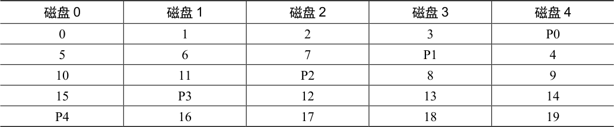
表38.9 具有旋转奇偶校验的RAID-5
表格文字
| 磁盘0 | 磁盘1 | 磁盘2 | 磁盘3 | 磁盘4 |
|---|---|---|---|---|
| 0 | 1 | 2 | 3 | P0 |
| 5 | 6 | 7 | P1 | 4 |
| 10 | 11 | P2 | 8 | 9 |
| 15 | P3 | 12 | 13 | 14 |
| P4 | 16 | 17 | 18 | 19 |
如你所见，每个条带的奇偶校验块现在都在磁盘上旋转，以消除RAID-4 的奇偶校验磁盘瓶颈。
RAID-5 分析¶
RAID-5 的大部分分析与RAID-4 相同。例如，两级的有效容量和容错能力是相同的。顺序读写性能也是如此。单个请求（无论是读还是写）的延迟也与RAID-4 相同。
随机读取性能稍好一点，因为我们可以利用所有的磁盘。最后，RAID-4 的随机写入性能明显提高，因为它允许跨请求进行并行处理。想象一下写入块 1 和写入块 10。这将变成对磁盘 1 和磁盘 4（对于块 1 及其奇偶校验）的请求以及对磁盘 0 和磁盘 2（对于块 10 及其奇偶校验）的请求。因此，它们可以并行进行。事实上，我们通常可以假设，如果有大量的随机请求，我们将能够保持所有磁盘均匀忙碌。如果是这样的话，那么我们用于小写入的总带宽将是 (N/4) · R MB/s。4 倍损失是由于每个 RAID-5 写入仍然产生总计 4 个 I/O 操作，这就是使用基于奇偶校验的 RAID 的成本。
由于RAID-5 基本上与RAID-4 相同，只是在少数情况下它更好，所以它几乎完全取代了市场上的RAID-4。唯一没有取代的地方是系统知道自己绝不会执行大写入以外的任何事情，从而完全避免了小写入问题[HLM94]。在这些情况下，有时会使用RAID-4，因为它的构建稍微简单一些。
38.8 RAID 比较：总结¶
现在简单总结一下表38.10 中各级RAID 的比较。请注意，我们省略了一些细节来简化分析。例如，在镜像系统中写入时，平均查找时间比写入单个磁盘时稍高，因为寻道时间是两个寻道时间（每个磁盘上一个）的最大值。因此，对两个磁盘的随机写入性能通常会比单个磁盘的随机写入性能稍差。此外，在RAID-4/5 中更新奇偶校验磁盘时，旧奇偶校验的第一次读取可能会导致完全寻道和旋转，但第二次写入奇偶校验只会导致旋转。
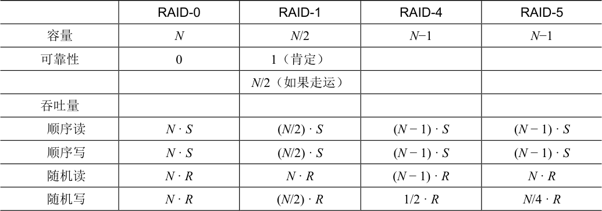
表38.10 RAID 容量、可靠性和性能
表格文字
| RAID-0 | RAID-1 | RAID-4 | RAID-5 | |
|---|---|---|---|---|
| 容量 | N | N/2 | N−1 | N−1 |
| 可靠性 | 0 | 1（肯定） | ||
| N/2（如果走运） | ||||
| 吞吐量 | ||||
| 顺序读 | N · S | (N/2) · S | (N − 1) · S | (N − 1) · S |
| 顺序写 | N · S | (N/2) · S | (N − 1) · S | (N − 1) · S |
| 随机读 | N · R | N · R | (N − 1) · R | N · R |
| 随机写 | N · R | (N/2) · R | 1/2 · R | N/4 · R |
续表
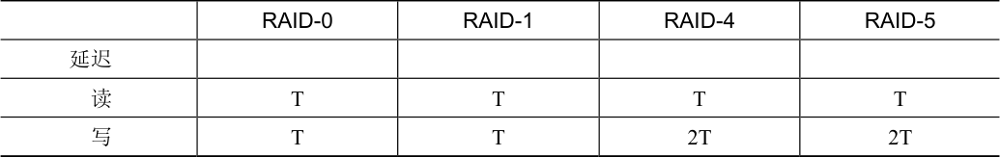
原书第 338 页表格 1
表格文字
| RAID-0 | RAID-1 | RAID-4 | RAID-5 | |
|---|---|---|---|---|
| 延迟 | ||||
| 读 | T | T | T | T |
| 写 | T | T | 2T | 2T |
但是，表38.10 中的比较确实抓住了基本差异，对于理解RAID 各级之间的折中很有用。对于延迟分析，我们就使用T 来表示对单个磁盘的请求所需的时间。
总之，如果你严格要求性能而不关心可靠性，那么条带显然是最好的。但是，如果你想要随机I/O 的性能和可靠性，镜像是最好的，你付出的代价是容量下降。如果容量和可靠性是你的主要目标，那么RAID-5 胜出，你付出的代价是小写入的性能。最后，如果你总是在按顺序执行I/O 操作并希望最大化容量，那么RAID-5 也是最有意义的。
38.9 其他有趣的RAID 问题¶
还有一些其他有趣的想法，人们可以（并且应该）在讨论RAID 时讨论。以下是我们最终可能会写的一些内容。
例如，还有很多其他RAID 设计，包括最初分类中的第2 和第3 级以及第6 级可容许多个磁盘故障[C+04]。还有RAID 在磁盘发生故障时的功能；有时它会有一个热备用（hot spare）磁盘来替换发生故障的磁盘。发生故障时的性能和重建故障磁盘期间的性能会发生什么变化？还有更真实的故障模型，考虑潜在的扇区错误（latent sector error）或块损坏（block corruption）[B+08]，以及处理这些故障的许多技术（详细信息参见数据完整性章节）。最后，甚至可以将RAID 构建为软件层：这种软件RAID 系统更便宜，但有其他问题，包括一致更新问题[DAA05]。
38.10 小结¶
我们讨论了RAID。RAID 将大量独立磁盘扩充成更大、更可靠的单一实体。重要的是，它是透明的，因此上面的硬件和软件对这种变化相对不在意。
有很多可能的RAID 级别可供选择，使用的确切RAID 级别在很大程度上取决于最终用户的优先级。例如，镜像RAID 是简单的、可靠的，并且通常提供良好的性能，但是容量成本高。相比之下，RAID-5 从容量角度来看是可靠和更好的，但在工作负载中有小写入时性能很差。为特定工作负载正确地挑选RAID 并设置其参数（块大小、磁盘数量等），这非常具有挑战性，更多的是艺术而不是科学。
参考资料¶
[B+08]“An Analysis of Data Corruption in the Storage Stack”Lakshmi N. Bairavasundaram, Garth R. Goodson, Bianca Schroeder, Andrea C. Arpaci-Dusseau, Remzi H.Arpaci-Dusseau FAST ’08, San Jose, CA, February 2008我们自己的工作分析了磁盘实际损坏数据的频率。不经常，但有时会发生！因此，一个可靠的存储系统必须考虑。
[BJ88]“Disk Shadowing”D. Bitton and J. Gray VLDB1988首批讨论镜像的论文之一，这里称镜像为“影子”。
[CL95]“Striping in a RAID level 5 disk array”Peter M. Chen, Edward K. Lee SIGMETRICS 1995对RAID-5 磁盘阵列中的一些重要参数进行了很好的分析。
[C+04]“Row-Diagonal Parity for Double Disk Failure Correction”P. Corbett, B. English, A. Goel, T. Grcanac, S. Kleiman, J. Leong, S. Sankar FAST ’04, February 2004虽然不是第一篇关于带有两块磁盘以实现奇偶校验的RAID 系统的论文，但它是这个想法的最新和高度可理解的版本。阅读它，了解更多信息。
[DAA05]“Journal-guided Resynchronization for Software RAID”Timothy E. Denehy, A. Arpaci-Dusseau, R.Arpaci-Dusseau FAST 2005我们自己在一致更新问题上的研究工作。在这里，我们通过将上述文件系统的日志机制与其下的软件RAID集成在一起，来解决它的软件RAID 问题。
[HLM94]“File System Design for an NFS File Server Appliance”Dave Hitz, James Lau, Michael Malcolm USENIX Winter 1994, San Francisco, California, 1994关于稀疏文件系统的论文，介绍了存储中的标志性产品，任意位置写入文件布局，即WAFL 文件系统，这是NetApp 文件服务器的基础。
[K86]“Synchronized Disk Interleaving”M.Y. Kim.IEEE Transactions on Computers, Volume C-35: 11, November 1986在这里可以找到关于RAID 的一些最早的工作。
[K88]“Small Disk Arrays - The Emerging Approach to High Performance”F. Kurzweil.Presentation at Spring COMPCON ’88, March 1, 1988, San Francisco, California另一个早期的RAID 参考。
[P+88]“Redundant Arrays of Inexpensive Disks”D．Patterson, G. Gibson, R. Katz. SIGMOD 1988本论文由著名作者Patterson、Gibson 和Katz 撰写。此后，该论文赢得了众多奖项，宣告了RAID 时代的到来，甚至RAID 这个名字本身也源于此文。
[PB86]“Providing Fault Tolerance in Parallel Secondary Storage Systems”A．Park and K. Balasubramaniam Department of Computer Science, Princeton, CS-TR-O57-86, November 1986另一项关于RAID 的早期研究工作。
[SG86]“Disk Striping”K. Salem and H. Garcia-Molina.IEEE International Conference on Data Engineering, 1986是的，另一项早期的RAID 研究工作。当那篇RAID 论文在SIGMOD 发布时，有很多这类论文公开发表。
[S84]“Byzantine Generals in Action: Implementing Fail-Stop Processors”F.B. Schneider.ACM Transactions on Computer Systems, 2(2):145154, May 1984一篇不是关于RAID 的文章！本文实际上是关于系统如何发生故障，以及如何让某些运行变成故障就停止。
作业¶
本节引入raid.py，这是一个简单的RAID 模拟器，你可以使用它来增强你对RAID 系统工作方式的了解。详情请参阅README 文件。
问题¶
1．使用模拟器执行一些基本的RAID 映射测试。运行不同的级别（0、1、4、5），看看你是否可以找出一组请求的映射。对于RAID-5，看看你是否可以找出左对称（left-symmetric）和左不对称（left-asymmetric）布局之间的区别。使用一些不同的随机种子，产生不同于上面的问题。
2．与第一个问题一样，但这次使用-C 来改变大块的大小。大块的大小如何改变映射？
3．执行上述测试，但使用-r 标志来反转每个问题的性质。
4．现在使用反转标志，但用-S 标志增加每个请求的大小。尝试指定8KB、12KB 和16KB的大小，同时改变RAID 级别。当请求的大小增加时，底层I/O 模式会发生什么？请务必在顺序工作负载上尝试此操作（-W sequential）。对于什么请求大小，RAID-4 和RAID-5 的I /O 效率更高？
5．使用模拟器的定时模式（-t）来估计100 次随机读取到RAID 的性能，同时改变RAID级别，使用4 个磁盘。
6．按照上述步骤操作，但增加磁盘数量。随着磁盘数量的增加，每个RAID 级别的性能如何变化？
7．执行上述操作，但全部用写入（-w 100），而不是读取。
每个RAID 级别的性能现在如何扩展？你能否粗略估计完成100 次随机写入所需的时间？
8．最后一次运行定时模式，但是这次用顺序的工作负载（-W sequential）。性能如何随RAID 级别而变化，在读取与写入时有何不同？如何改变每个请求的大小？使用RAID-4 或RAID-5 时应该写入RAID 大小是多少？